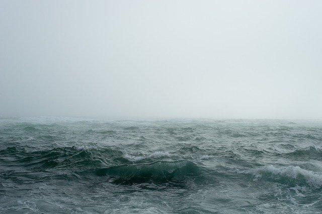

Vi har et spesielt forhold til vær i Norge. Skadefryd og trass kan se ut til å være bærende egenskaper for å holde ut i de norske værforholdene. Skadefryd ved å glede seg over andre landsdelers evigvarende regnvær, og trassen i at vi bruker naturen til aktivt friluftsliv uavhengig av været på utsiden av huset. Det fins ikke dårlig vær - bare dårlige klær" er et utslitt begrep i Norge. Nordmenn går toppturer i snø, regn og kuling. Klærne bidrar til at en hver tur ut føles som en vakker sommerdag.
Matre i Hordaland har den norske regn-rekorden med 229,6 millimeter på ett døgn, målt 26. november 1940.
Steder som har flest døgn med orkan i middelvind: